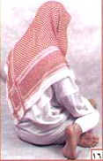

৮. তাশাহুদে বসাঃ দ্বিতীয় রাকা’আতে রাসুলুল্লাহ (সাঃ) সিজদাহর মাঝের বৈঠকের মতই বাম পা বিছিয়ে তার উপর ভর করে এবং ডান পায়ের আঙুলগুলি কিবলামূখী করে রাখতেন।
ছবিতে দেখুনঃ (দ্বিতীয় রাকা’আতে বসার নিয়ম)
কিন্তু দুই রাকা’আতের বেশি অর্থ্যাৎ,৩ বা ৪ রাকা’আত বিশিষ্ট নামাজে দ্বিতীয়বার তাশাহুদে বসার সময়ে প্রথমবারের মত বাম পা বিছিয়ে তার উপর ভর করে বসতেন না বরং নিতম্বের উপর ভর করে এবং বাম পা কে ডান পায়ের উরুর নীচে রাখতেন।
৩য়,৪র্থ বা আরো পরের রাকা’আতে বসার চিত্রটি দেখুনঃ

চিত্রটি দেখলে বুঝতে পারবেন যে,পরেরবারের তাশাহুদে বাম পা কে ডান পায়ের নীচ দিয়ে চালিয়ে দেওয়া হয়েছে এবং নিতম্বের উপর ভর করে বসে থাকা হয়েছে।
দুই রাকা’আত বিশিষ্ট নামাজে তাশাহুদে বসে প্রথমে ‘আত্তাহ্যিয়াতু’ পড়বেন এবং এরপর দরুদ শরীফ এবং তারপরে অন্য যেকোন দোয়া যেমন “দোয়া মাছুরা” এবং ইচ্ছা করলে সেইসাথে আরো দোয়া পড়ে আপনি সালাম ফিরিয়ে নামাজ শেষ করতে পারেন।এসময়েও বাংলাতে দোয়া করা যাবে।আপনি চেষ্টা করবেন সিজদাহর সময়ে যেভাবে দোয়া করেছেন,আত্তাহ্যিয়াতু-দরুদ শরীফ-দোয়া মাছুরা পড়ার পরেও ওইভাবে দোয়া করতে।
আর দুই এর বেশী যেমন তিন বা চার রাকা’আত বিশিষ্ট নামাজে শুধুমাত্র ‘আত্তাহ্যিয়াতু’ পড়ে দাঁড়িয়ে গেলেই হবে।তবে এই সময়েও দরুদ শরীফ পড়া মুস্তাহাব বা উত্তম।
৮.১ তাশাহুদের সময়ে আংগুলের সাহায্যে ইশারা করাঃ তাশাহুদে বসে থাকা অবস্থায় পুরোটা সময়ে হাতের শাহাদাৎ আংগুল (তর্জনী) উঁচু থাকবে এবং রাসুলুল্লাহ (সাঃ) ওই আংগুলের দিকে দৃষ্টি নিবদ্ধ করে রাখতেন।এসময়ে তর্জনী বাদে হাতের অন্য আংগুলগুলিকে ভাঁজ করে রাখতেন।এসময়ে হাত নাড়িয়ে দোয়ার ইশারা করতেন।অনেকে আত্তাহ্যিয়াতু পড়ার সময়ে যখন “লা—“ উচ্চারন করে,তখন হাতের আঙ্গুল উঠায়।এর চেয়ে বেশী উত্তম তাশাহুদে বসে থাকার পুরোটা সময়ে অর্থ্যাৎ,তাশাহুদ থেকে না উঠা অথবা সালাম ফেরানোর আগ পর্যন্ত হাতের আঙ্গুল উঠিয়ে ইশারা করে দোয়া করার পক্ষে অধিকাংশ গ্রহণযোগ্য হাদীস পাওয়া যায়,তাই এইটা করাই উত্তম।এসময়ে হাতের আঙ্গুলগুলো হালকা নাড়িয়ে ইশারা দিতে হয়,তবে খেয়াল রাখতে হবে যেন এমনভাবে আংগুল নাড়ানো না হয় যাতে পাশে বসে থাকা কারোর দৃষ্টি আপনার দিকে না চলে আসে এবং তার অসুবিধা না হয়।রাসুলুল্লাহ (সাঃ) বলেছেন,এই আংগুলের ইশারা শয়তানের নিকট লৌহদন্ডের আঘাত অপেক্ষা বেশী কষ্টদায়ক।
ছবিতে দেখুনঃ (দ্বিতীয় রাকা’আতে বসার নিয়ম)
৩য়,৪র্থ বা আরো পরের রাকা’আতে বসার চিত্রটি দেখুনঃ
চিত্রটি দেখলে বুঝতে পারবেন যে,পরেরবারের তাশাহুদে বাম পা কে ডান পায়ের নীচ দিয়ে চালিয়ে দেওয়া হয়েছে এবং নিতম্বের উপর ভর করে বসে থাকা হয়েছে।
দুই রাকা’আত বিশিষ্ট নামাজে তাশাহুদে বসে প্রথমে ‘আত্তাহ্যিয়াতু’ পড়বেন এবং এরপর দরুদ শরীফ এবং তারপরে অন্য যেকোন দোয়া যেমন “দোয়া মাছুরা” এবং ইচ্ছা করলে সেইসাথে আরো দোয়া পড়ে আপনি সালাম ফিরিয়ে নামাজ শেষ করতে পারেন।এসময়েও বাংলাতে দোয়া করা যাবে।আপনি চেষ্টা করবেন সিজদাহর সময়ে যেভাবে দোয়া করেছেন,আত্তাহ্যিয়াতু-দরুদ শরীফ-দোয়া মাছুরা পড়ার পরেও ওইভাবে দোয়া করতে।
আর দুই এর বেশী যেমন তিন বা চার রাকা’আত বিশিষ্ট নামাজে শুধুমাত্র ‘আত্তাহ্যিয়াতু’ পড়ে দাঁড়িয়ে গেলেই হবে।তবে এই সময়েও দরুদ শরীফ পড়া মুস্তাহাব বা উত্তম।
৮.১ তাশাহুদের সময়ে আংগুলের সাহায্যে ইশারা করাঃ তাশাহুদে বসে থাকা অবস্থায় পুরোটা সময়ে হাতের শাহাদাৎ আংগুল (তর্জনী) উঁচু থাকবে এবং রাসুলুল্লাহ (সাঃ) ওই আংগুলের দিকে দৃষ্টি নিবদ্ধ করে রাখতেন।এসময়ে তর্জনী বাদে হাতের অন্য আংগুলগুলিকে ভাঁজ করে রাখতেন।এসময়ে হাত নাড়িয়ে দোয়ার ইশারা করতেন।অনেকে আত্তাহ্যিয়াতু পড়ার সময়ে যখন “লা—“ উচ্চারন করে,তখন হাতের আঙ্গুল উঠায়।এর চেয়ে বেশী উত্তম তাশাহুদে বসে থাকার পুরোটা সময়ে অর্থ্যাৎ,তাশাহুদ থেকে না উঠা অথবা সালাম ফেরানোর আগ পর্যন্ত হাতের আঙ্গুল উঠিয়ে ইশারা করে দোয়া করার পক্ষে অধিকাংশ গ্রহণযোগ্য হাদীস পাওয়া যায়,তাই এইটা করাই উত্তম।এসময়ে হাতের আঙ্গুলগুলো হালকা নাড়িয়ে ইশারা দিতে হয়,তবে খেয়াল রাখতে হবে যেন এমনভাবে আংগুল নাড়ানো না হয় যাতে পাশে বসে থাকা কারোর দৃষ্টি আপনার দিকে না চলে আসে এবং তার অসুবিধা না হয়।রাসুলুল্লাহ (সাঃ) বলেছেন,এই আংগুলের ইশারা শয়তানের নিকট লৌহদন্ডের আঘাত অপেক্ষা বেশী কষ্টদায়ক।